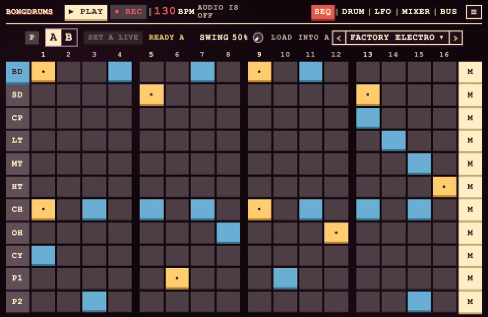

GhettoMachine / Technical folio
BongDrums
Eleven pads. Six synthesis families. Every voice is generated on the hit, not read from a sample bank.

On this page
01 / Architecture
From step to speaker
A pad press and a sequenced step hit the same voice code. Each strike takes the pad’s current settings and velocity. Edits shape the next strike; a preset change does not have to cut off a cymbal that’s already ringing.
- 01Pad or sequencer
- 02Voice + hit envelope
- 03Stereo mix + ROOM / DIGI returns
- 04Four-stage drum bus
02 / Sound generation
Six synthesis families
- 01Kick
- A pitched body, fast pitch envelope and separate click. 808 Round and 909 Punch are editable presets of the same kick voice: longer low-end weight versus a stronger beater and a wider pitch sweep.
- 02Snare
- Two pitched shell modes and a separate noise layer for the wires.
- 03Clap
- A short succession of noise bursts gives the initial slap; a smoother decay follows it.
- 04–06Toms
- One membrane-and-mallet design in three registers, with independent tuning and decay. The Round Tom preset settles at about 97, 142 or 204 Hz depending on the pad.
- 07–09Metal
- Closed and open hats share the metallic oscillator design with the cymbal pad. Pad 9 also covers ride, riser and noise-drop sounds.
- 10–11Percussion
- Two independently editable SY‑1-inspired voices. The same slots can cover a downward zap, metallic FM, a velocity-driven upward sweep or a filtered noise hit.
03 / Shared work
Six pulses, separate tails
The metal voices share a six-pulse oscillator source when their active tuning matches. A second active tuning uses a second bank, so a new articulation does not force the old one to retune. Each voice keeps its own filtering and envelope. The closed hat chokes the open hat, not the cymbal or percussion.
V6 computes the shared pulse bank in small blocks before filtering it. The revised pulse calculation reproduced the earlier output in the verification tests. This is why sharing saves work without turning all the metal voices into variations of one envelope.
04 / Signal processing
The drum bus
Each pad feeds the stereo mix and has independent sends to ROOM reverb and DIGI delay. The returns join the stereo drums before group gain and pan. The four processors then run in this order:
- SaturatorAdds harmonics.
- CompressorControls the stereo group’s dynamics.
- TransientRounds or emphasizes the attack.
- LimiterCatches sample peaks, including the effects returns.
Dry keeps the pad and group mix but bypasses the audible returns and the four bus stages. Bus lets you hear the processing on the same groove. The limiter sets a sample-peak ceiling, not a guaranteed true-peak ceiling.
05 / Instrument measurements
What fits on the FM‑1
Results from the physical FM‑1 running development build V6, at 44.1 kHz and 256 frames: 5.805 ms per callback. These are whole-instrument peaks with the full drum bus enabled, not time spent in the drum engine alone.
- Factory groove
- 3.375 ms58.1% of deadline
- Factory rack + four sounding synth voices
- 4.777 ms82.3% of deadline
- Dense hits + four synth voices + rapid cymbal preset changes
- 5.534 ms95.3% of deadline
The scored runs had no missed deadlines or early drum-tail cuts. The last run hit the synth voice guard 17 times. That kept playback on time, but it wasn’t full synth polyphony throughout.
This page documents the V6 development build and its test conditions. It is not a firmware download or a claim that the public browser emulator runs this build.